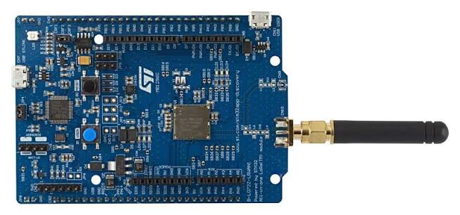

ST B-L072Z-LRWAN1

The B-L072Z-LRWAN1 is a LoRa and Sigfox discovery board built around the Murata CMWX1ZZABZ-091 module, which packs an STM32L072CZ microcontroller and a Semtech SX1276 sub-GHz transceiver into a single package. The board carries an SMA connector with a whip antenna, an on-board ST-LINK/V2-1 and Arduino Uno R3 compatible headers.
Board information
The board features:
Murata CMWX1ZZABZ-091 module: STM32L072CZ (Cortex-M0+ up to 32 MHz, 192 KiB flash, 20 KiB RAM) plus an SX1276 transceiver
Programmable RF power, up to +14 dBm on the RFO path and +20 dBm on PA_BOOST
SMA and U.FL antenna connectors
32 MHz TCXO for the radio, powered from a GPIO
On-board ST-LINK/V2-1 with mass storage programming and a virtual COM port
Arduino Uno R3 headers plus the ST morpho extension headers
Four LEDs and one user button
USB 2.0 full speed device connector
Powered from USB, from an external supply or from a battery
Board documentation: https://www.st.com/en/evaluation-tools/b-l072z-lrwan1.html
Clocking
NuttX runs the part from the internal 16 MHz RC oscillator through the PLL, which gives a 32 MHz system clock. No external crystal is needed for the microcontroller; the 32 MHz TCXO of the module belongs to the radio.
Serial console
USART2 is wired to the virtual COM port of the on-board ST-LINK and is the NuttX console in every configuration:
Signal |
Pin |
|---|---|
USART2_TX |
PA2 |
USART2_RX |
PA3 |
Settings are 115200 8N1. With the board plugged in, the port shows up as
/dev/ttyACM0 on Linux.
LEDs
The board has four LEDs, all active high:
LED |
Pin |
Colour |
|---|---|---|
LED1 |
PA5 |
Green, also Arduino D13 |
LED2 |
PB5 |
Green |
LED3 |
PB6 |
Blue |
LED4 |
PB7 |
Red |
If CONFIG_ARCH_LEDS is selected, LED1 is driven by the OS to show the
system state:
State |
LED1 |
|---|---|
Idle stack created |
ON |
In an interrupt |
Flashing |
Signal handler, assertion |
Flashing |
The system has crashed |
Blinking |
Otherwise the four LEDs are available to the application through
/dev/userleds when CONFIG_USERLED is selected.
Radio
The SX1276 sits inside the module and is reached over SPI1. Besides the bus and the interrupt lines, three GPIOs drive the antenna switch and one powers the TCXO that clocks the radio:
Signal |
Pin |
Notes |
|---|---|---|
SPI1_NSS |
PA15 |
Chip select, driven as a GPIO |
SPI1_SCK |
PB3 |
|
SPI1_MISO |
PA6 |
|
SPI1_MOSI |
PA7 |
|
RESET |
PC0 |
Active low |
DIO0 |
PB4 |
Transmit and receive done, EXTI capable |
DIO1 |
PB1 |
|
DIO2 |
PB0 |
|
DIO3 |
PC13 |
|
TCXO power |
PA12 |
Active high, needs about 5 ms to settle |
RX enable |
PA1 |
Antenna switch towards RFI_HF |
TX RFO enable |
PC2 |
Antenna switch towards RFO_HF, up to +14 dBm |
TX BOOST enable |
PC1 |
Antenna switch towards PA_BOOST |
The board support code powers the TCXO before registering the driver and picks the antenna switch position from the operating mode and the requested power: the RFO path is used up to 14 dBm and PA_BOOST above that. This board is wired for the high frequency band.
The driver itself, its configuration options and what has to match between two radios to make them hear each other are documented in SX127x LoRa radio.
Other peripherals
Interface |
Pins |
|---|---|
USART1 |
PA9 (TX), PA10 (RX), on the Arduino header |
SPI2 |
PB12 (NSS), PB13 (SCK), PB14 (MISO), PB15 (MOSI) |
I2C1 |
PB8 (SCL), PB9 (SDA) |
ADC |
PA0, PA4 and the other Arduino analogue pins |
Flashing
The board can be programmed through its own ST-LINK or through an external debug probe on the SWD header.
With the ST-LINK, the simplest route is the mass storage device it exposes; copying the raw binary to it programs the flash:
$ cp nuttx.bin /media/<user>/DIS_L072Z/
openocd and st-flash work as well.
With a SEGGER J-Link on the SWD pins, use a command script:
$ cat > flash.jlink << EOF
h
loadbin nuttx.bin, 0x08000000
r
g
q
EOF
$ JLinkExe -device STM32L072CZ -if SWD -speed 4000 -autoconnect 1 \
-nogui 1 -CommanderScript flash.jlink
The virtual COM port of a stand-alone J-Link is not connected to USART2 of this board, so the console still comes from the ST-LINK USB cable.
Configurations
Each configuration is selected with:
$ ./tools/configure.sh b-l072z-lrwan1:<name>
$ make
nsh
The basic NuttShell configuration over USART2, with the hello example
built in. A good first check that the board boots.
adc
NuttShell plus the adc example, reading the ADC with software triggered
conversions.
nxlines_oled
Runs the nxlines graphics example on an SSD1306 OLED display connected to
I2C1 (PB8 and PB9), in one bit per pixel mode.
sx127x
NuttShell plus the sx127x example and the SX1276 driver registered at
/dev/sx127x. The example defaults to FSK at 930 MHz; everything can be
overridden from the command line:
nsh> sx127x -h
nsh> sx127x -m 0 -f 917200000 -t -p 14 -l 32 # transmit LoRa frames
nsh> sx127x -m 0 -f 917200000 -r # receive them
lorawan_tx
The same interactive setup, but with the radio defaults already matching a public LoRaWAN network in the 915 MHz band: LoRa modulation, 917.2 MHz, 125 kHz bandwidth, spreading factor 7, CRC enabled and the 0x34 sync word. Useful to feed a gateway under test:
nsh> sx127x -m 0 -f 917200000 -t -p 14 -l 32 -i 5 -d 60
lorawan_beacon
The same radio settings without a shell: the example itself is the entry
point and starts transmitting as soon as the board boots, which is what is
needed when the board is driven from a debug probe and no console is wired.
The command line of the example comes from CONFIG_INIT_ARGS, and the
frequency, the payload size and the power from
CONFIG_EXAMPLES_SX127X_RFFREQ, _TXDATA and _TXPOWER.
Talking to another radio
Two of these boards reach each other with the lorawan_tx configuration,
one receiving and the other transmitting, and the same commands work against
a LoRaWAN gateway. The recipes, and the settings that have to match on both
sides, are in SX127x LoRa radio.